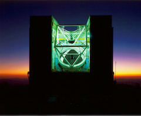

Benjamin Weiner, MMT Observatory
 These are a set of widely-used spectrophotometric standard stars, compiled from the ESO Spectrophotometric Standards webpage at https://www.eso.org/sci/observing/tools/standards/spectra.html. Well-measured spectrophotometric standard stars are needed for astronomical flux calibration, throughput measurements, and so on. However, because they need to be placed on a slit or fiber of small angular size, accurate positions are important.
Because many spectrophotometric standards are nearby, they can have high proper motions, up to and over 0.5-1 arcsec per year. Many of these stars have moved significantly from their coordinates at epoch 2000 or at the original date of publication. If you try to slew to them in absolute coordinates, or if your instrument or guide camera has a small field of view, you will not find the star. Thus, I have compiled the stars' updated, highly accurate Gaia positions and proper motions from Gaia Data Release 2. For the 3 bright stars at g<3, proper motions were taken from the SIMBAD database at CDS and their positions were advanced to 2015.5 to match Gaia DR2.
Links are provided back to the ESO compilation of spectra and finding charts. However, because some stars have high PMs, they will have moved significantly from the finding chart position (many finding charts are from the Digitized Sky Survey and can be over 30 years old).
Star positions on this page are given for epoch 2015.5, in equinox 2000. A proper motion Javascript calculator is provided below, so that you can compute the star's position at any epoch. For observing, you will often want to compute the position at the current epoch (and in equinox 2000).
What's the difference between equinox and epoch? Equinox is the reference frame of the coordinate system, eg J2000 is oriented to the position of the north polar axis in year 2000. Epoch is the time of observation, eg where the star was at year 2015.5.
This calculator takes as input a star's RA, Dec at a previous epoch (default 2015.5), its proper motion in RA and Dec in milli-arcsec per year, and the desired new epoch, and calculates the new coordinates for that epoch. Fill in the boxes in the upper row, click Compute, and the star's new position will appear in the lower row.
The calculator can fill in the RA, Dec, PM fields from the table below by selecting the star from the menu (using an internal lookup table), or you can type in coordinates. This calculator uses Javascript embedded in the webpage, and it will work offline if you save this page as HTML to your computer (useful if your observatory's internet is down).
| No. | Name | RA Dec (epoch 2015.5) | RA, deg | Dec, deg | pm_RA, mas/yr | pm_Dec, mas/yr | parallax, mas | g mag | B-g, color | SpecType | Note | ESO webpage | Gaia ID |
|---|---|---|---|---|---|---|---|---|---|---|---|---|---|
| 1 | HR9087 | 00h01m49.467s -03d01m39.173s | 0.45611 | -3.02755 | 18.840 | -9.700 | 7.140 | 5.06 | -0.02 | B7III | - | hr9087 | 2448177130188111232 |
| 2 | G158-100 | 00h33m54.630s -12d08m01.745s | 8.47762 | -12.13382 | 157.600 | -191.430 | 2.170 | 14.69 | 0.39 | dG-K | - | g158_100 | 2375647158466154112 |
| 3 | HR153 | 00h36m58.315s +53d53m48.728s | 9.24298 | 53.89687 | 15.960 | -6.760 | 9.190 | 3.57 | 0.03 | B2IV | - | hr153 | 418001477266591744 |
| 4 | CD-34d241 | 00h41m46.899s -33d39m08.723s | 10.44541 | -33.65242 | -17.270 | -18.720 | 3.600 | 11.10 | 0.26 | F | - | cd_34241 | 5006170763041755264 |
| 5 | BPM16274 | 00h50m03.883s -52d08m15.040s | 12.51618 | -52.13751 | 138.590 | 30.690 | 19.610 | 14.25 | -0.12 | DA2 | Model | bpm16274 | 4922382445088509312 |
| 6 | LTT1020 | 01h54m50.633s -27d28m39.335s | 28.71097 | -27.47759 | 310.820 | -231.980 | 7.300 | 11.34 | 0.32 | G | - | ltt1020 | 5024640977840398848 |
| 7 | HR718 | 02h28m09.582s +08d27m36.144s | 37.03992 | 8.46004 | 23.710 | -4.790 | 16.570 | 4.18 | 0.07 | B9III | - | hr718 | 22745910577134848 |
| 8 | EG21 | 03h10m31.132s -68d36m04.982s | 47.62972 | -68.60138 | 39.450 | -103.190 | 96.170 | 11.42 | -0.07 | DA | - | eg21 | 4646535078125821568 |
| 9 | LTT1788 | 03h48m22.898s -39d08m39.952s | 57.09541 | -39.14443 | 214.130 | -189.450 | 2.750 | 13.01 | 0.27 | F | - | ltt1788 | 4855735169813450624 |
| 10 | GD50 | 03h48m50.274s -00d58m34.817s | 57.20947 | -0.97634 | 84.430 | -162.960 | 32.040 | 14.04 | -0.25 | DA2 | - | gd50 | 3251244858154433536 |
| 11 | SA95-42 | 03h53m43.657s -00d04m35.296s | 58.43190 | -0.07647 | -14.790 | -95.870 | 5.810 | 15.60 | -0.21 | DA | - | sa95_42 | 3257402879184420736 |
| 12 | HZ4 | 03h55m22.170s +09d47m18.049s | 58.84237 | 9.78835 | 173.270 | -5.510 | 28.590 | 14.56 | -0.05 | DA4 | - | hz4 | 3302846072717868416 |
| 13 | LB227 | 04h09m29.024s +17d07m54.052s | 62.37093 | 17.13168 | 111.450 | -22.020 | 19.940 | 15.38 | -0.08 | DA4 | - | lb227 | 45980377978968064 |
| 14 | HZ2 | 04h12m43.617s +11d51m47.567s | 63.18174 | 11.86321 | 59.180 | -90.670 | 23.060 | 13.91 | -0.15 | DA3 | - | hz2 | 3304090857318319232 |
| 15 | HR1544 | 04h50m36.724s +08d54m00.194s | 72.65302 | 8.90005 | 1.340 | -27.980 | 17.520 | 4.27 | 0.08 | A1V | - | hr1544 | 3289827339648726272 |
| 16 | G191-B2B | 05h05m30.640s +52d49m50.470s | 76.37767 | 52.83069 | 12.590 | -93.520 | 18.890 | 11.74 | -0.25 | DA1 | - | g191b2b | 266077145295627520 |
| 17 | HR1996 | 05h45m59.899s -32d18m23.504s | 86.49958 | -32.30653 | 2.990 | -22.030 | 2.150 | 5.10 | -0.13 | O9V | Model | hr1996 | 2901155648586891648 |
| 18 | GD71 | 05h52m27.702s +15d53m10.547s | 88.11543 | 15.88626 | 76.840 | -172.940 | 19.250 | 13.03 | -0.26 | DA1 | - | gd71 | 3348071631670500736 |
| 19 | LTT2415 | 05h56m25.018s -27d51m34.801s | 89.10424 | -27.85967 | 236.470 | -157.220 | 2.550 | 12.09 | 0.23 | -- | - | ltt2415 | 2910503176753011840 |
| 20 | HILT600 | 06h45m13.371s +02d08m14.680s | 101.30571 | 2.13741 | -1.170 | -0.530 | 0.390 | 10.42 | 0.09 | B1 | - | hilt600 | 3126052883671520896 |
| 21 | HD49798 | 06h48m04.694s -44d18m58.345s | 102.01956 | -44.31621 | -4.110 | 5.670 | 1.970 | 8.21 | -0.13 | O6 | Model | hd49798 | 5562023884304074240 |
| 22 | HD60753 | 07h33m27.314s -50d35m03.228s | 113.36381 | -50.58423 | -3.120 | 5.310 | 1.430 | 6.64 | -0.02 | B3IV | Model | hd60753 | 5493730399606077440 |
| 23 | G193-74 | 07h53m27.110s +52d29m27.510s | 118.36296 | 52.49097 | -88.370 | -255.420 | 45.820 | 15.55 | 0.12 | DA0 | - | g193_74 | 984190381489031424 |
| 24 | BD+75d325 | 08h10m49.519s +74d57m58.097s | 122.70633 | 74.96614 | 7.170 | 10.300 | 6.630 | 9.49 | -0.16 | O5p | - | bd75d325 | 1135587497636732672 |
| 25 | LTT3218 | 08h41m31.122s -32d56m12.055s | 130.37968 | -32.93668 | -1061.330 | 1345.950 | 117.330 | 11.83 | 0.07 | DA | - | ltt3218 | 5639391810273308416 |
| 26 | HR3454 | 08h43m13.456s +03d23m55.169s | 130.80607 | 3.39866 | -19.540 | -1.000 | 7.610 | 4.21 | -0.05 | B3V | - | hr3454 | 3079329270187691008 |
| 27 | AGK+81d266 | 09h21m19.096s +81d43m26.836s | 140.32957 | 81.72412 | -11.260 | -51.260 | 3.470 | 11.88 | -0.24 | sdO | - | agk81d266 | 1144974578159253632 |
| 28 | GD108 | 10h00m47.202s -07d33m30.805s | 150.19667 | -7.55856 | -42.370 | -1.880 | 1.910 | 13.55 | -0.17 | sdB | - | gd108 | 3772994667772794112 |
| 29 | LTT3864 | 10h32m13.287s -35d37m41.783s | 158.05536 | -35.62827 | -260.740 | -4.590 | 3.330 | 12.02 | 0.28 | F | - | ltt3864 | 5444093531284061568 |
| 30 | Feige34 | 10h39m36.756s +43d06m08.816s | 159.90315 | 43.10245 | 12.540 | -25.410 | 4.400 | 11.11 | -0.23 | DO | - | feige34 | 781164326766404736 |
| 31 | HD93521 | 10h48m23.512s +37d34m13.116s | 162.09797 | 37.57031 | 0.220 | 1.720 | 0.510 | 6.97 | -0.11 | O9Vp | - | hd93521 | 775029739076581248 |
| 32 | HR4468 | 11h36m40.846s -09d48m07.942s | 174.17019 | -9.80221 | -57.300 | 4.180 | 11.260 | 4.63 | 0.02 | B9.5V | - | hr4468 | 3587107658569000960 |
| 33 | LTT4364 | 11h45m49.386s -64d50m34.818s | 176.45578 | -64.84301 | 2661.590 | -344.850 | 215.740 | 11.43 | 0.08 | C2 | - | ltt4364 | 5332606522595645952 |
| 34 | HR4554 | 11h53m49.998s +53d41m41.161s | 178.45833 | 53.69477 | 96.455 | 3.965 | 29.487 | 2.44 | 0.01 | A0V | Model | hr4554 | NA |
| 35 | Feige56 | 12h06m47.227s +11d40m12.558s | 181.69678 | 11.67015 | -7.430 | -6.530 | 0.160 | 11.01 | -0.07 | B5p | - | feige56 | 3918811315733520640 |
| 36 | HZ21 | 12h13m56.140s +32d56m31.826s | 183.48392 | 32.94217 | -100.880 | 30.130 | 6.320 | 14.71 | 0.00 | DO2 | - | hz21 | 4016474027321256704 |
| 37 | Feige66 | 12h37m23.518s +25d03m59.447s | 189.34799 | 25.06651 | 1.830 | -27.430 | 7.070 | 10.47 | -0.17 | sdO | - | feige66 | 3959631234670040704 |
| 38 | LTT4816 | 12h38m48.889s -49d48m01.368s | 189.70371 | -49.80038 | -557.230 | -74.090 | 67.520 | 13.81 | -0.00 | DA | - | ltt4816 | 6127333286605955072 |
| 39 | Feige67 | 12h41m51.782s +17d31m19.171s | 190.46576 | 17.52199 | -7.330 | -37.280 | 3.260 | 11.77 | -0.25 | sdO | - | feige67 | 3935488605023787392 |
| 40 | GD153 | 12h57m02.280s +22d01m49.490s | 194.25950 | 22.03041 | -38.410 | -202.950 | 14.580 | 13.32 | -0.24 | DA1 | - | gd153 | 3944400490365194368 |
| 41 | G60-54 | 13h00m08.609s +03d28m27.642s | 195.03587 | 3.47435 | -439.160 | -865.950 | 60.800 | 15.65 | 0.35 | DC | - | g60_54 | 3704392873140270336 |
| 42 | HR4963 | 13h09m56.952s -05d32m20.926s | 197.48730 | -5.53915 | -30.820 | -29.690 | 12.020 | 4.27 | 0.13 | A1IV | - | hr4963 | 3629615946329315456 |
| 43 | HZ43 | 13h16m21.666s +29d05m53.750s | 199.09028 | 29.09826 | -157.770 | -107.310 | 16.760 | 12.88 | -0.36 | DA1 | - | hz43 | 1461833904932026368 |
| 44 | HZ44 | 13h23m35.178s +36d07m59.477s | 200.89658 | 36.13319 | -66.270 | -4.520 | 2.480 | 11.64 | -0.24 | sdO | - | hz44 | 1473687671071803520 |
| 45 | GRW+70d5824 | 13h38m49.246s +70d17m07.260s | 204.70519 | 70.28535 | -402.090 | -24.610 | 37.710 | 12.79 | -0.12 | DA3 | - | grw70d5824 | 1686708050268594944 |
| 46 | HR5191 | 13h47m32.248s +49d18m47.768s | 206.88437 | 49.31327 | -121.170 | -14.910 | 31.380 | 1.86 | -0.19 | B3V | Model | hr5191 | NA |
| 47 | CD-32d9927 | 14h11m46.319s -33d03m14.270s | 212.94299 | -33.05396 | -4.140 | 7.120 | 2.610 | 10.39 | 0.17 | A0 | - | cd_32d9927 | 6123935314632189568 |
| 48 | HR5501 | 14h45m30.164s +00d43m02.053s | 221.37568 | 0.71724 | -40.420 | -8.100 | 5.660 | 5.65 | 0.01 | B9.5V | - | hr5501 | 3652142603120146560 |
| 49 | LTT6248 | 15h38m59.373s -28d35m39.718s | 234.74739 | -28.59437 | -233.380 | -177.350 | 4.580 | 11.64 | 0.29 | A | - | ltt6248 | 6210089815971933056 |
| 50 | BD+33d2642 | 15h51m59.868s +32d56m54.341s | 237.99945 | 32.94843 | -14.560 | 0.920 | 0.170 | 10.79 | -0.11 | B2IV | - | bd33d2642 | 1369896865785991424 |
| 51 | EG274 | 16h23m33.941s -39d13m46.153s | 245.89142 | -39.22949 | 77.130 | 0.330 | 77.430 | 11.00 | -0.14 | DA | - | eg274 | 6018034958869558912 |
| 52 | G138-31 | 16h27m53.388s +09d12m08.730s | 246.97245 | 9.20242 | -96.720 | -470.570 | 39.880 | 16.04 | 0.19 | DC | - | g138_31 | 4452521234885949184 |
| 53 | LTT7379 | 18h36m25.705s -44d18m39.384s | 279.10710 | -44.31094 | -168.740 | -159.040 | 9.430 | 10.06 | 0.34 | G0 | - | ltt7379 | 6709878766312642944 |
| 54 | HR7001 | 18h36m56.596s +38d47m05.536s | 279.23582 | 38.78487 | 200.940 | 286.230 | 130.230 | 0.00 | 0.00 | A0V | - | hr7001 | NA |
| 55 | HR7596 | 19h54m44.836s +00d16m24.838s | 298.68682 | 0.27357 | 39.130 | -13.930 | 6.260 | 5.57 | 0.09 | A0III | - | hr7596 | 4237169341286788096 |
| 56 | LTT7987 | 20h10m56.441s -30d13m10.492s | 302.73517 | -30.21958 | -340.720 | -249.280 | 61.810 | 12.27 | -0.08 | DA | - | ltt7987 | 6749419923164242816 |
| 57 | G24-9 | 20h13m55.414s +06d42m35.802s | 303.48089 | 6.70995 | -254.960 | -582.280 | 43.620 | 15.68 | 0.19 | DC | - | g24_9 | 4249667902270614272 |
| 58 | HR7950 | 20h47m40.585s -09d29m45.337s | 311.91911 | -9.49593 | 31.950 | -34.730 | 15.130 | 3.69 | 0.12 | A1V | - | hr7950 | 6903096911031159424 |
| 59 | LDS749B | 21h32m16.660s +00d15m14.821s | 323.06942 | 0.25412 | 413.230 | 27.270 | 23.400 | 14.66 | -0.09 | DB4 | - | lds749b | 2687733913283870336 |
| 60 | BD+28d4211 | 21h51m10.981s +28d51m49.486s | 327.79575 | 28.86375 | -34.730 | -56.850 | 8.800 | 10.46 | -0.19 | Op | - | bd28d4211 | 1897151272994229120 |
| 61 | G93-48 | 21h52m25.395s +02d23m14.917s | 328.10581 | 2.38748 | 15.430 | -300.550 | 44.430 | 12.79 | -0.10 | DA3 | - | g93_48 | 2693940725141960192 |
| 62 | BD+25d4655 | 21h59m41.932s +26d25m56.752s | 329.92472 | 26.43243 | -37.460 | -41.670 | 8.480 | 9.65 | -0.15 | O | - | bd25d4655 | 1796648870766546944 |
| 63 | NGC7293 | 22h29m38.588s -20d50m13.798s | 337.41078 | -20.83717 | 38.870 | -3.420 | 4.980 | 13.48 | -0.25 | V.Hot | - | ngc7293 | 6628874205642084224 |
| 64 | HR8634 | 22h41m27.802s +10d49m52.727s | 340.36584 | 10.83131 | 78.280 | -10.640 | 14.280 | 3.30 | 1.22 | B8V | - | hr8634 | 2717594072113581696 |
| 65 | LTT9239 | 22h52m41.122s -20d35m37.867s | 343.17134 | -20.59385 | 78.870 | -314.210 | 6.320 | 11.89 | 0.35 | F | - | ltt9239 | 2398029465700538880 |
| 66 | LTT9491 | 23h19m35.650s -17d05m28.306s | 349.89854 | -17.09120 | 242.140 | 10.400 | 39.160 | 14.08 | -0.04 | DC | - | ltt9491 | 2405805697263561600 |
| 67 | Feige110 | 23h19m58.391s -05d09m56.182s | 349.99329 | -5.16561 | -8.370 | -0.630 | 3.730 | 11.79 | -0.24 | DOp | - | feige110 | 2633603478379307904 |
| 68 | GD248 | 23h26m06.542s +16d00m17.492s | 351.52726 | 16.00486 | -41.520 | -115.570 | 29.500 | 15.08 | -0.01 | DC | - | gd248 | 2814629409239942272 |
| No. | Name | RA Dec (epoch 2015.5) | RA, deg | Dec, deg | pm_RA, mas/yr | pm_Dec, mas/yr | parallax, mas | g mag | B-g, color | SpecType | Note | ESO webpage | Gaia ID |
Notes (from original ESO table): Stars with "Model" in the Notes column only have model data for the optical (3300-10000A) range and should NOT be used for flux calibration over this range. Bohlin & Lindler (1992) gives more details.
The legacy MMT catalog tool used with Blue/Red Channel spectrographs does not take proper motions in milli-arcsec per year, but rather in pm_RA = seconds of time per century and pm_Dec = seconds of arc per century. These differ from the mas/yr values:
pm_RA (sec of time/century) = pm_RA(mas/yr) / [10 * 15 * cos(Dec)] pm_Dec (sec of arc/century) = pm_Dec(mas/yr) / 10Also, the catalog tool for Blue/Red Channel only accepts epoch 2000 coordinates, not epoch 2015.5, so you should back propagate the coordinates to epoch 2000. An issue with this catalog tool is that it will use the same number for epoch and equinox, so if you want to apply proper motions you should do one of two things:
The MMT queue observing interface used with MMIRS and Binospec requires the same funky per-century units, and is intended to allow input of different epochs, but we have had the same epoch=equinox issue in some internal software, so you are safer advancing the RA/Dec coordinates to the current time as described above.
This page uses data compiled and released by the Gaia mission archive and the SIMBAD database of CDS, Strasbourg.
Page by Benjamin Weiner, MMT Observatory.